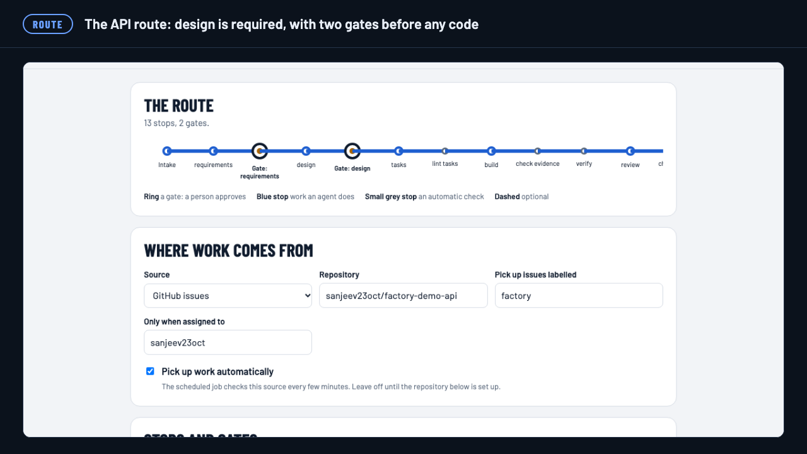
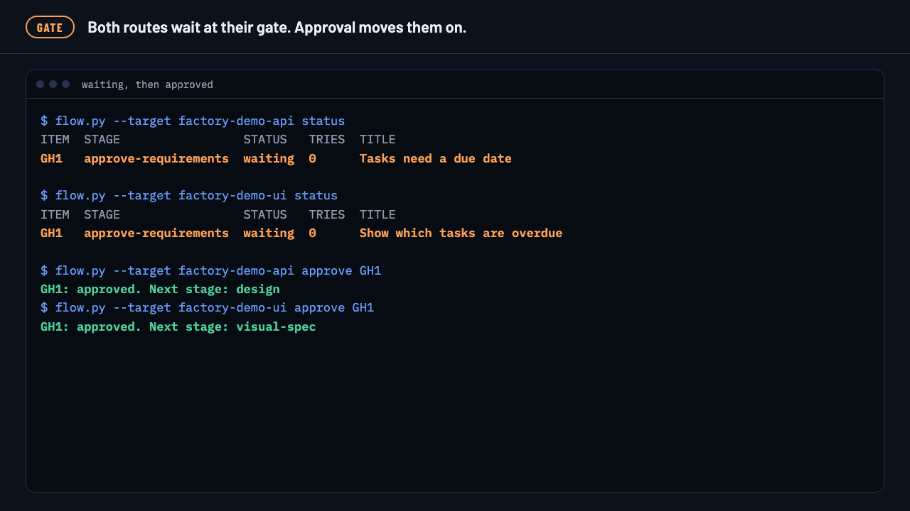

Two repositories, two routes, one factory
Two GitHub issues went in. Agents wrote the requirements, stopped at each gate for approval, built the change with a maker and a checker, proved it with evidence, and opened pull requests. Everything below is from that run.
A software factory at work
This is a recording of one real run. Two GitHub repositories, a tasks API and a task board, each got its own factory. One issue was filed in each. Everything below is what actually happened.
Define the line
A factory starts with a route. It lists the stops a piece of work passes through, in order, and marks the gates where it must wait for a person. The two routes here differ on purpose: the API route requires a design and has two gates before any code, because API changes are costly to undo. The UI route has a visual spec and a gate at the end where a person looks at the screens.


python3 factory/editor.pyClick Add a repository, pick a starting point, then reorder, add or remove stops and gates.
Work comes in
Work enters from the tracker the team already uses. Here that is GitHub issues; GitLab and files work the same way. An issue is picked up only when it carries the factory label and is assigned to the right person, so nothing starts by accident.


Agents work each stop
Each stop is done by an agent following a skill, a short document that says how to do that one job and nothing else. The requirements skill asks for testable criteria with exact responses. The design skill asks for a plan that cites the real code. Because the skill is written down, the work is done the same way every time, and you can change how a stop works by editing its skill.


targets/<name>/skills/. The editor shows each stop with its skill's description.Gates hold the line
A gate is a point where the route stops until a person approves. Both routes stopped after requirements. The API route stopped again after design. The requirements each listed what the issue had left undecided, so the person approving could see exactly what they were agreeing to. In this run the gates were approved on the owner's behalf for the demo.

python3 factory/flow.py --target factory-demo-api status python3 factory/flow.py --target factory-demo-api approve GH1
Build, check, prove
The work is broken into small tasks, and every task names the skill that builds it; a script rejects a task list where one does not. A maker agent builds each task. A separate checker runs the section's gate and writes an evidence sheet of expected against found. Then the factory's own script re-runs the checks and the tests. Work that is ticked without evidence is sent back to the build stop automatically.


A pull request, not a merge
The route's last stop pushes its branch and opens a pull request. It carries one commit per stop, closes the issue, and links the requirements, the tasks and every evidence file, so the reviewer reads proof, not logs. The factory never merges.

factory/….Every request is checked
A second route reviews pull requests, whoever wrote them. A script first checks the process: is there a spec, does every task name a skill, is there evidence, did the tests change with the code, plus any rules the team has added. Two requests were reviewed here. The one the factory built passed all 11 checks and then got an agent's code review. A quick hack added by hand, with no spec and no test, failed, and no agent time was spent on it.


factory-review. Set the rules under Review rules in the editor.You set the rules
Every check has a switch: fail, warn, or off. A team adds its own rules by filling in a sentence, such as “new lines under api/ must not contain print(”, and can try the rules against a real pull request before saving. Two such rules were added for this demo, and both caught the quick hack.

python3 factory/editor.py # then open the Review rules tab
Two issues in, two pull requests out
Both issues became open pull requests, each backed by requirements, tasks, evidence and passing tests. A person approved three gates and will decide whether to merge.